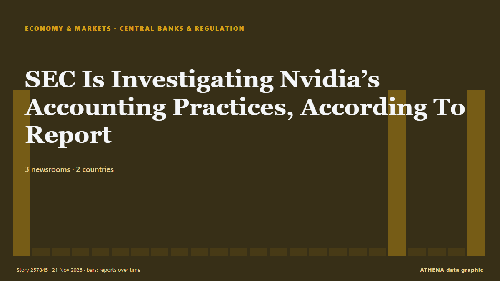

Economics, Finance & Markets
SponsoredPresented by  Cybernetics and Artificial Intelligence Lab Welcome to the Cybernetics and Artificial Intelligence Laboratory, established at the Department of Business Administration of the National and Kapodistrian University of Athens. The lab is headed by Professor Dimitrios Thomakos. The lab aims to do research that can be published in top venues. Our research uses tools and methods of Artificial Intelligence, and lies in the following areas: - Forecasting - Decision making - Cyber security - Finance We are always looking forward to collaborating with exceptional students!
Cybernetics and Artificial Intelligence Lab Welcome to the Cybernetics and Artificial Intelligence Laboratory, established at the Department of Business Administration of the National and Kapodistrian University of Athens. The lab is headed by Professor Dimitrios Thomakos. The lab aims to do research that can be published in top venues. Our research uses tools and methods of Artificial Intelligence, and lies in the following areas: - Forecasting - Decision making - Cyber security - Finance We are always looking forward to collaborating with exceptional students!
Market monitor - official figures
Which way official market measures are moving - up, down or flat - with the latest official figure and its date, and the market news ATHENA verified alongside. Official figures, not live prices.
Energy
| 1 day | 1 week | 1 month | Official figure | |
|---|---|---|---|---|
| Brent crude | ▬ | ▲ | ▼ | $92.94/bblOfficial data of 17 Nov 2026 |
| WTI crude | ▲ | ▼ | ▼ | $89.53/bblOfficial data of 17 Nov 2026 |
| US natural gas (Henry Hub) | ▼ | ▲ | ▼ | $3.10/MMBtuOfficial data of 17 Nov 2026 |
| European natural gas (1 month · 3 months · 12 months)(1M · 3M · 12M) | ▲ | ▲ | ▲ | $25.49/MMBtuOfficial data of 1 Sep 2026 |
| Coal (Australia) (1 month · 3 months · 12 months)(1M · 3M · 12M) | ▲ | ▲ | ▲ | $153.84/tOfficial data of 1 Sep 2026 |
Food
| 1 month | 3 months | 12 months | Official figure | |
|---|---|---|---|---|
| Wheat | ▲ | ▲ | ▲ | $246.85/tOfficial data of 1 Sep 2026 |
US stock markets
| 1 day | 1 week | 1 month | Official figure | |
|---|---|---|---|---|
| S&P 500 | ▼ | ▼ | ▼ | Direction only (index © Cboe)Official data of 19 Nov 2026 |
| Nasdaq Composite | ▼ | ▼ | ▼ | Direction only (index © Cboe)Official data of 19 Nov 2026 |
Rates, risk and the dollar
| 1 day | 1 week | 1 month | Official figure | |
|---|---|---|---|---|
| US 10-year Treasury yield | ▼ | ▼ | ▼ | 5.04 %Official data of 19 Nov 2026 |
| Market volatility (VIX) | ▲ | ▲ | ▲ | Direction only (index © Cboe)Official data of 19 Nov 2026 |
| US dollar, broad index | ▬ | ▲ | ▲ | 122.65Official data of 13 Nov 2026 |
The euro against other currencies
| 1 day | 1 week | 1 month | Official figure | |
|---|---|---|---|---|
| EUR/USD | ▬ | ▼ | ▼ | 1.0990 USDOfficial data of 20 Nov 2026 |
| EUR/GBP | ▲ | ▲ | ▬ | 0.8374 GBPOfficial data of 20 Nov 2026 |
| EUR/CHF | ▼ | ▼ | ▲ | 0.9223 CHFOfficial data of 20 Nov 2026 |
| EUR/JPY | ▼ | ▼ | ▼ | 174.35 JPYOfficial data of 20 Nov 2026 |
| EUR/CNY | ▲ | ▼ | ▼ | 7.3388 CNYOfficial data of 20 Nov 2026 |
| EUR/TRY | ▲ | ▼ | ▬ | 55.579 TRYOfficial data of 20 Nov 2026 |
| EUR/NOK | ▲ | ▲ | ▲ | 10.7180 NOKOfficial data of 20 Nov 2026 |
Sources: US Energy Information Administration (oil, US gas), IMF (European gas, coal, wheat), US Treasury and Federal Reserve (10-year yield, dollar index) Cboe (VIX), S&P Dow Jones Indices (S&P 500) and Nasdaq (Nasdaq Composite), via FRED (Federal Reserve Bank of St. Louis); euro reference rates © European Central Bank. Figures are the latest official values with their date - not live prices. Directions are computed by ATHENA.
Crypto, ETFs and shares in the news
- Bitcoin falls to a two-year low Risk 1.2 21 Nov
- Bitcoin rises over 2% to more than $60,000 Risk 1.7 21 Nov
- Anthropic IPO turns more than 5,000 employees into millionaires Risk 0.0 21 Nov
- (2nd LD) Seoul shares plunge over 5 pct as Anthropic debut fails to ease AI concerns Risk 5.1 21 Nov
- Anthropic shares fall a day after blockbuster debut as wider tech sell off continues Risk 5.4 21 Nov
- Anthropic sinks by 10% in premarket after record IPO debut Risk 1.4 21 Nov
- Binance resumes withdrawals after $6bn crypto hack Risk 3.5 21 Nov
- Former worker shares story of Tanzania-Zambia Railway Risk 0.0 21 Nov
- Indonesia regulator fines and sanctions firms for stock manipulation, disclosure failures Risk 3.3 21 Nov
- Bitcoin Falls Below US$60,000 as Funds Sell Risk 1.9 21 Nov

Central banks & regulationSEC Is Investigating Nvidia’s Accounting Practices, According To Report
News of the SEC’s probe into Nvidia broke on Tuesday, though it is unclear when exactly it began. from Forbes Business
| 9 Nov | 155 |
|---|---|
| 10 Nov | 131 |
| 11 Nov | 129 |
| 12 Nov | 113 |
| 13 Nov | 71 |
| 14 Nov | 39 |
| 15 Nov | 64 |
| 16 Nov | 127 |
| 17 Nov | 101 |
| 18 Nov | 105 |
| 19 Nov | 105 |
| 20 Nov | 75 |
| 21 Nov | 12 |
| 22 Nov | 3 |
EU leaders’ chair pushes budget cuts, suggests digital tax
The new proposal by the EU leaders' chair cuts the EU's seven-year budget by €40 billion to €1.582 trillion from October's draft and introduces a 3% tax on digital advertising and online… from Free Malaysia Today
UK braced as temperatures could drop to minus 10C in coldest night of autumn
Freezing fog could make for difficult driving conditions on Saturday. from Evening Standard (London)
Boeing Weighs More Layoffs As 737 MAX Output Boost Slows
The company is struggling to lift output to its target monthly number. from Simple Flying
Palestinian authorities say man shot dead by West Bank settler guards
RAMALLAH, Palestinian Territories: Palestinian authorities said a man was shot dead by security guards from an Israeli settlement in the central occupied West Bank on Friday, while another was… from Arab News
US visa holders are fed up and leaving tech jobs
Uncertainty over H-1B rules and permanent residency is prompting some highly skilled Indian professionals to consider leaving the US, despite strong jobs and career prospects in its technology sector. from Business Standard
SK Hynix to become Kioxia's top shareholder with bond conversion
Korean chip giant SK hynix Inc. is considering converting convertible bonds (CBs) linked to its investment in Kioxia Corp., a Japanese NAND flash memory maker, into shares, industry sources said… from The Korea Times
Bitcoin rises over 2% to more than $60,000
Bitcoin, the world's largest cryptocurrency by market value, was up by around 2.14 per cent at $60,192.07 at 10:16 am ET (1516 GMT) on Saturday. from Deccan Herald
Anthropic IPO turns more than 5,000 employees into millionaires
More than 5,000 employees of US-based Anthropic have become millionaires through the value of their shareholdings following the company's stock market debut on Nasdaq. from AzerNews
CrowdStrike is reportedly in talks to buy cybersecurity firm Zscaler
CrowdStrike is in talks to acquire Zscaler, Bloomberg reported on Friday. from The Next Web
Costa revives EU digital tax proposal in bid to reach agreement on budget
Latest seven-year plan for the bloc scales back spending but would still be an increase of about a quarter on current levels. from Luxembourg Times
(2nd LD) Seoul shares plunge over 5 pct as Anthropic debut fails to ease AI concerns
SEOUL, Nov. 20 (Yonhap) -- Seoul shares plunged more than 5 percent Friday, led ... from Yonhap (English)
Anthropic shares fall a day after blockbuster debut as wider tech sell off continues
The shares have fallen in the second day of trading as global markets are dominated by investor wariness towards AI. from TheJournal.ie
Mortgage interest rates continue to rise in Portugal
The implicit interest rate on all outstanding mortgage agreements rose for the fifth consecutive month in October, reaching 3.231%, its highest level since August 2025, according to the National… from The Portugal News
Binance resumes withdrawals after $6bn crypto hack
An on-chain tally puts the suspected Binance drain at $5.57 billion across three blockchains, as Tether and Circle froze $1.8 billion. from Decrypt
‘The Altruists’ Review: Netflix’s Slight Sam Bankman-Fried Series Tells a Strange, Crooked Love Story
Framing the downfall of FTX as the culmination of two nerds' inept love affair, Graham Moore and Jacqueline Hoyt's limited series struggles to deepen what we already know about the 2022 financial… from IndieWire
Bitcoin Falls Below US$60,000 as Funds Sell
Bitcoin fell below US$60,000 on Friday for the first time since July, as US funds sold and traders were forced out. from The Rio Times
Anthropic set to surge, but indices fall back
Anthropic IPO day isn't going so well for the rest of the market, says Chris Beauchamp, Chief Market Analyst at online trading and investing platform IG. from FXStreet
Lessons from Brazil and Peru on how to build AI-ready institutions across Latin America
Brazil and Peru offer early blueprints for AI regulation in Latin America: one for building regulatory institutions before legislation is in place, and another for turning AI laws into effective… from Atlantic Council
Robert Pattinson said he would wait 20 years to ‘go for’ Bond – he got it in 14
It’s reported that the announcement about who will be the next James Bond is now imminent - with plenty of actors still in the frame to take on the iconic role. from The Scotsman
Traffic partially resumed on Kyiv's Pivdennyi Bridge
Vehicles weighing up to 10 tonnes and public transport up to 18 tonnes can use the bridge towards the right bank. from Ukrainska Pravda (English)
Dollar holds near 19-month high as Fed hike debate and AI jitters underpin gains
USD is on track for a fourth consecutive weekly advance, trading near 103.9 on the Dollar Index, the Greenback’s strongest level since early April 2025 and the days of tariff doom and gloom. from FXStreet
Anthropic’s IPO puts AI’s circular financing boom to the test
Anthropic faces enormous compute commitments as it goes public, but its biggest infrastructure partners, including Amazon and Google, could continue profiting from AI even if Anthropic loses its lead. from TechCrunch
Stocks slide as Anthropic IPO fails to calm AI fears
Investor confidence in AI has been shaken by worries about the technology's profitability and the massive debt needed to fund and build related infrastructure. from Free Malaysia Today
Full text: APEC Connectivity Blueprint
The 33rd Asia-Pacific Economic Cooperation (APEC) Economic Leaders' Meeting adopted the APEC Connectivity Blueprint on Thursday. from CGTN (World)
Tom Holland and Zendaya buy £8.25 million London mansion at £750,000 discount
Tom Holland and Zendaya have reportedly purchased an £8.25 million mansion in London, paying £750,000 below its asking price. from Times of India (World)
Nasdaq futures jump on renewed AI optimism ahead of Anthropic’s market debut
Nasdaq futures rose more than 2% on Thursday after Anthropic priced its IPO above the marketed range, fueling expectations for a strong market debut and lifting sentiment toward AI-linked stocks… from The San Juan Daily Star
U.S. AI startup Anthropic floats shares on Nasdaq with record IPO
Luxury home sellers are offering multimillion-dollar mansions in exchange for Anthropic stock as the AI giant's IPO approaches. from Business Insider
Anthropic becomes one of world’s most valuable public companies in stock market debut
Anthropic is the first purely AI company to be publicly listed, creating a test for the entire industry. from BBC News
Real estate and finance drive surge in Cyprus’ foreign direct investment
Cyprus’ foreign direct investment (FDI) stock increased by 4.1 per cent to €381.44 billion in 2025, while investment by Cypriot entities abroad rose by 3.2 per cent to €336.54 billion, according to… from Cyprus Mail
Philippines inks Chile FTA, eyes Latin American market
SHENZHEN, China — The Philippines is seeking to diversify its sources of supply and expand access to Latin… from BusinessWorld
(2nd LD) Appeals court upholds Kakao founder's acquittal on stock price manipulation charges
SEOUL, Nov. 20 (Yonhap) -- An appeals court on Friday upheld a lower court's acq... from Yonhap (English)
Dude, Where Are My Billions? Ashton Kutcher Edging Closer to Super Rich Status After Anthropic IPO
The actor and famed tech investor's venture capital firm, Sound Ventures holds a roughly 0.5 percent stake in the AI giant. from The Hollywood Reporter
IMF’s Georgieva warns more AI correction to come
International Monetary Fund (IMF) Managing Director Kristalina Georgieva expects a further correction in the prices of artificial intelligence-related assets in financial markets, warning that… from AzerNews